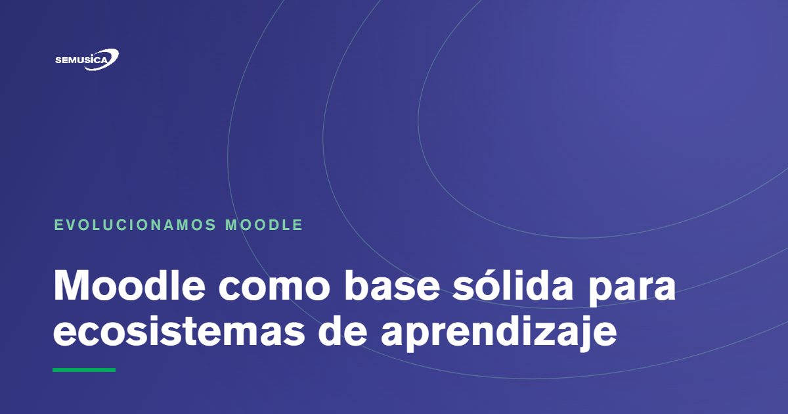

Blog › Evolucionamos Moodle
Moodle como plataforma LMS: una base sólida para construir ecosistemas de aprendizaje
Por Daniel Ravelo Franco — 7 jun 2026

Cuando una institución decide implementar una plataforma de e-learning, una de las decisiones más importantes es elegir el LMS sobre el cual construirá su estrategia de formación digital. Esa elección define cómo podrá gestionar, escalar, personalizar y sostener sus procesos de aprendizaje en el tiempo. En ese contexto, Moodle se ha consolidado como una de las plataformas LMS más relevantes.
En este artículo
- ¿Por qué Moodle sigue siendo una plataforma LMS relevante?
- Moodle no debería ser solo un espacio para subir contenidos
- De plataforma LMS a ecosistema formativo
- Aulas virtuales Moodle personalizadas
- Itinerarios de aprendizaje alineados a roles y competencias
- Paneles avanzados y visualización del perfil de usuario
- Integración de Moodle con ERP, directorios activos y otros sistemas
- Gestión de matrículas y pensiones para institutos y academias
- Desarrollo de plugins Moodle a medida
- Moodle con enfoque pedagógico y humano
- Implementación Moodle para instituciones educativas y empresas
- Moodle como arquitectura para la formación humana